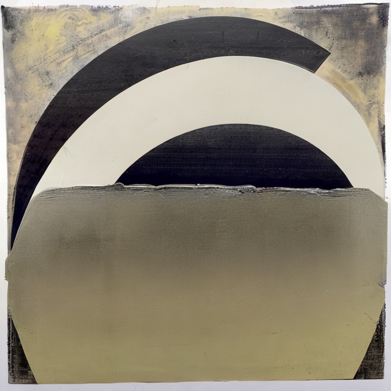
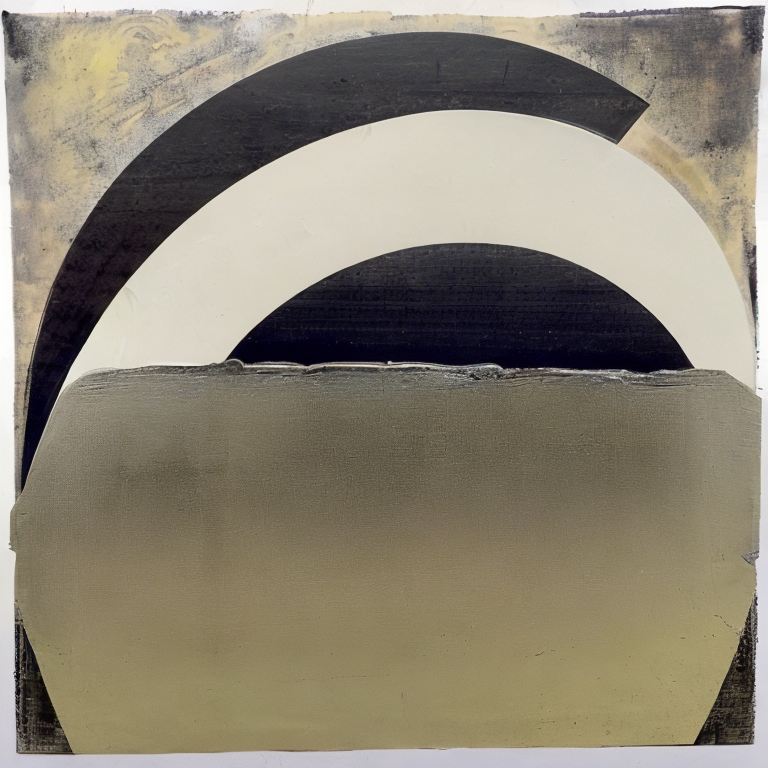
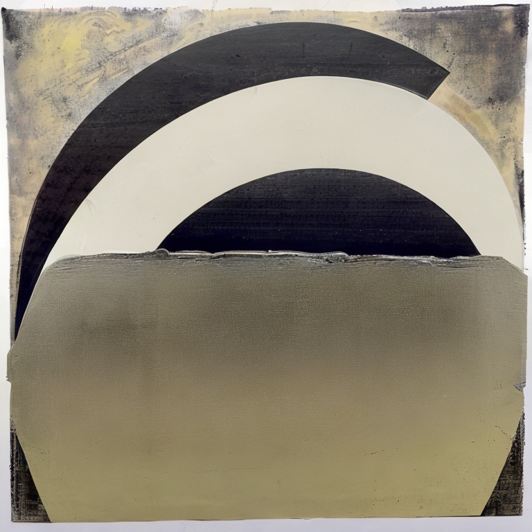

This model / concept was trained on a series of abstract mixed-media artworks produced and selected by a collaborating visual artist. While the model was able to successfully emulate the artist's color sensibilities it seemed unable to emulate nuances in mark-making and texture that were in line with the artist's visual preferences and instead seemed to be pulled into generic abstraction visual attractors.
model documentation

more images available on discord